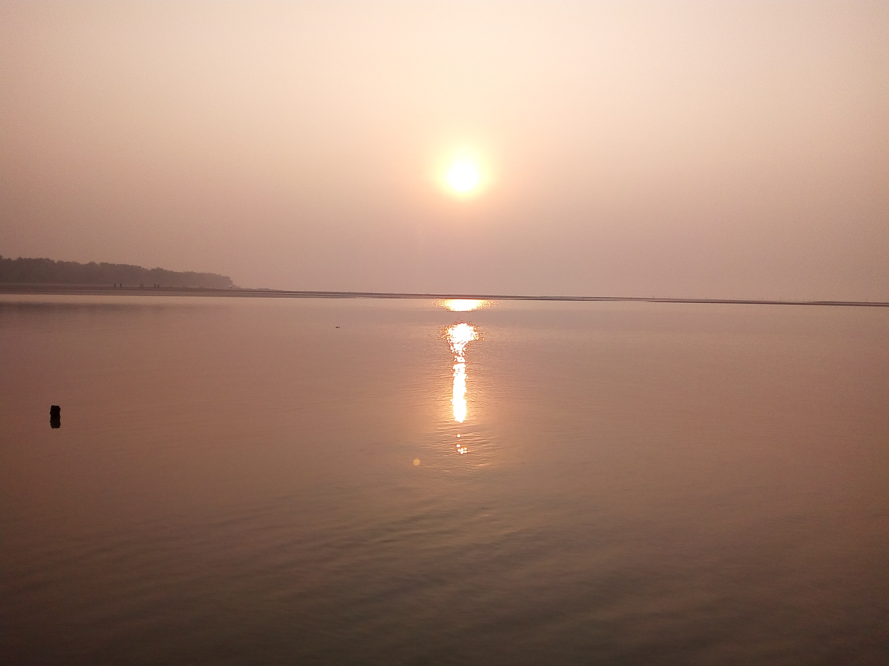

Kayes (Bambara: Kayi, Soninké: Xaayi) is a city in western Mali on the Sénégal River, with a population of 127,368 at the 2009 census. Kayes is the capital of the administrative region of the same name. The name "Kayes" comes from the Soninké word "karré", which describes a low humid place that floods in rainy season. The city is located 420 kilometres (260 mi) northwest of the capital Bamako..
History of Kayes
Prior to French colonial expansion, Kayes was a small village. Its location on the path of the future Dakar-Niger Railway, and the French need for trade centers, led to the creation of the Kayes market town in 1881. It remains a transport hub, primarily for Senegalese trade, to this day. In 1892, Kayes became the capital of the French Sudan; Bamako replaced it as the capital, first of the state of Haut Sénégal-Niger on October 17, 1899, then as the capital of all of French Sudan in 1908.
We shall not cease from exploration, and the end of all our exploring will be to arrive where we started and know the place for the first time. T. S. ELIOT
Spaceflights cannot be stopped. This is not the work of any one man or even a group of men. It is a historical process which mankind is carrying out in accordance with the natural laws of human development.
Climate
Kayes has a hot semi-arid climate (Köppen climate classification BSh). The climate is subject to the West African Monsoon with all the rainfall occurring between June and October. August is the wettest month. There is almost no rainfall during the other seven months of the year. The total annual rainfall is around 650 mm.[3] Kayes is nicknamed the "pressure cooker of Africa" due to its extreme heat; the town is surrounded by iron-rich mountains which contribute to the temperature. The town has been described as the hottest continuously inhabited town in Africa. The average daily high temperature in the city is 37 °C (99 °F), with temperatures usually peaking in April at an average of nearly 44 °C (111 °F).
